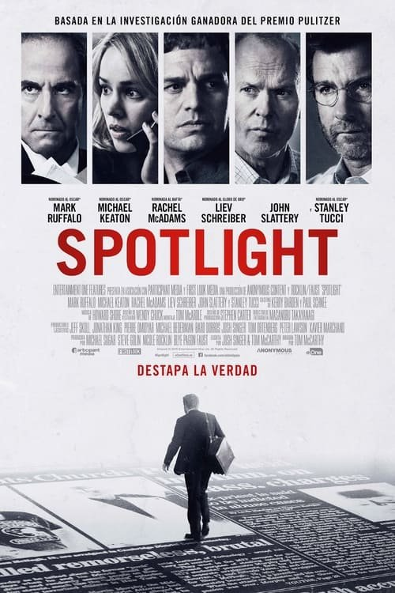

Spotlight (2015)
Sinopsis Rápida
Un equipo de periodistas del Boston Globe desentierra una impactante verdad que sacudirá los cimientos de la Iglesia Católica. ¿Hasta dónde llegarán para exponer la verdad?
Sinopsis Detallada
Spotlight sigue la investigación del equipo de periodistas del Boston Globe que descubre un enorme escándalo de abuso sexual infantil dentro de la Arquidiócesis de Boston. La película retrata con precisión la meticulosa investigación, las presiones políticas y el impacto emocional que sufren los reporteros al enfrentarse a una poderosa institución. Con un ritmo absorbente y actuaciones excepcionales, Spotlight es un poderoso recordatorio de la importancia del periodismo de investigación y la lucha por la justicia.
¿Por qué tenés que verla?
- Una historia real impactante que te mantendrá al borde del asiento.
- Actuaciones magistrales que transmiten la tensión y la determinación de los periodistas.
- Una película que generó un importante debate sobre el abuso sexual infantil y la responsabilidad institucional.
- Una narrativa concisa y efectiva que logra un gran impacto emocional.
Idea Extra
Comparación del caso de Spotlight con otros escándalos de abuso sexual institucional en la historia.